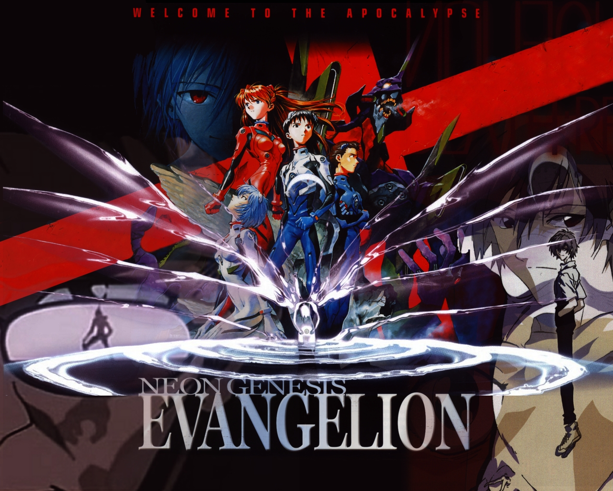

Neon Genesis Evangelion (anime) 1998
Um mundo pós-apocalíptico causado pela ignorância humana.

Puella Magi Madoka Magica (anime) 2011
A história de Madoka Kaname, uma estudante que pode se tornar uma garota mágica ao fazer um desejo, em troca de lutar contra as "bruxas.
Avatar: A Lenda de Aang (desenho) 2005
O jovem Aang, o último dominador de ar, é descoberto preso no gelo após 100 anos e precisa restaurar o equilíbrio do mundo.